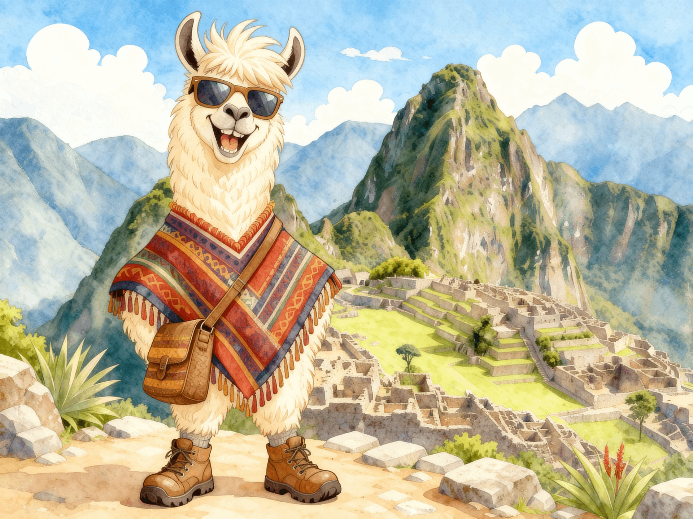
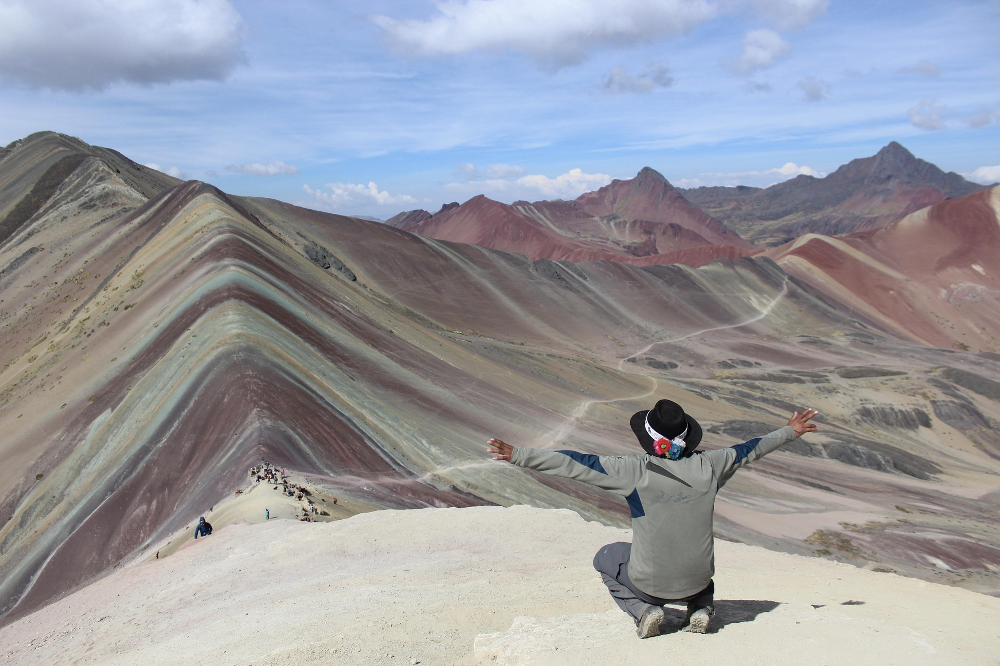

Módulo Educativo
Presentaciones y videos organizados por materia, listos para descargar.

Descarga material educativo y encuentra guías de transporte para moverte por todo el Perú.
Presentaciones y videos organizados por materia, listos para descargar.

Guías del Metro, el Metropolitano y rutas interprovinciales por el Perú.